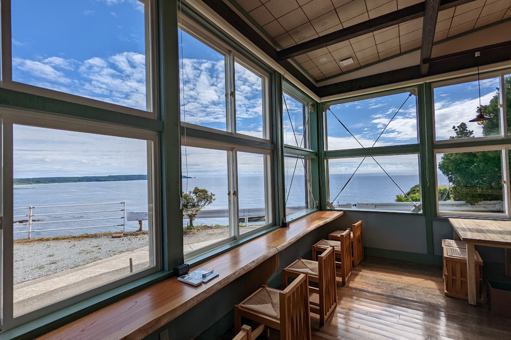
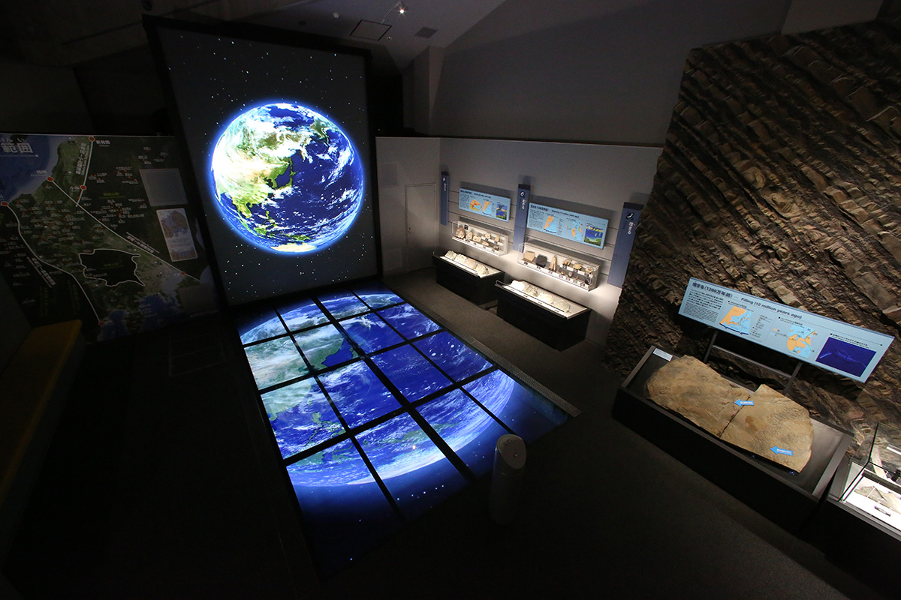
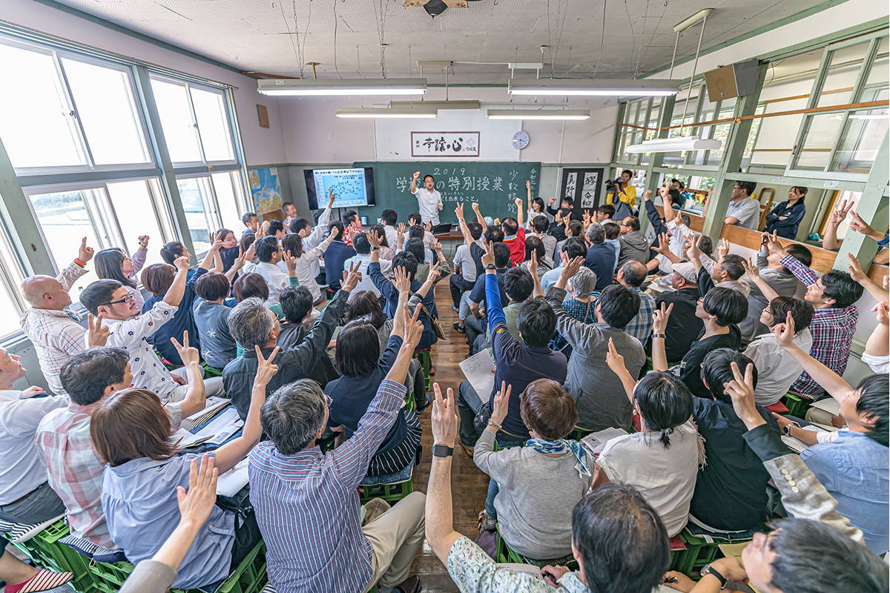
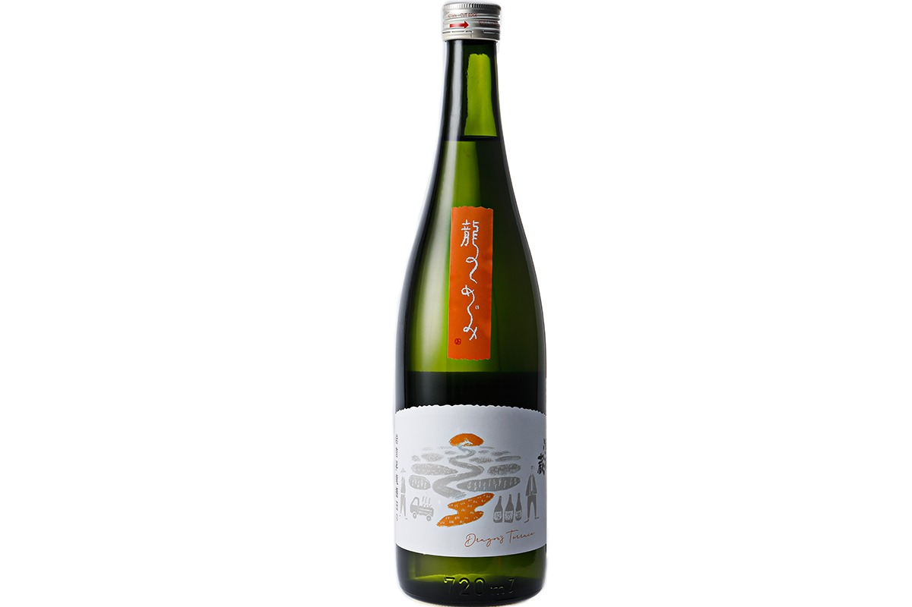
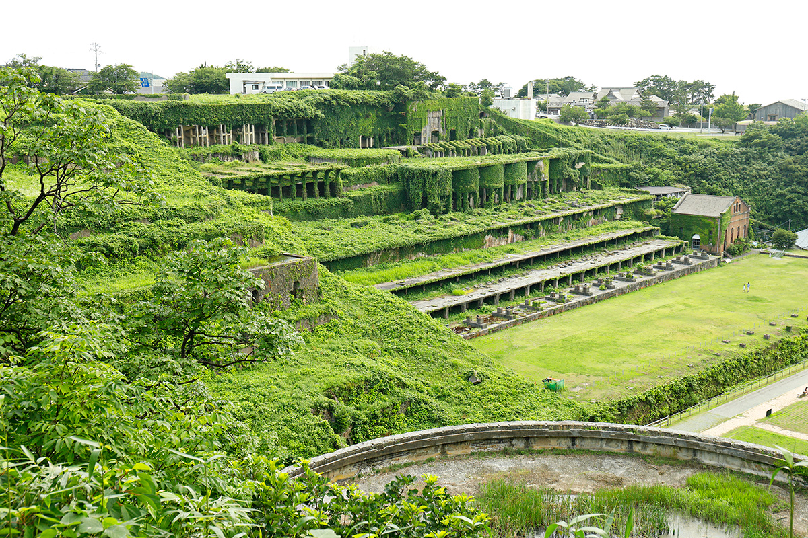
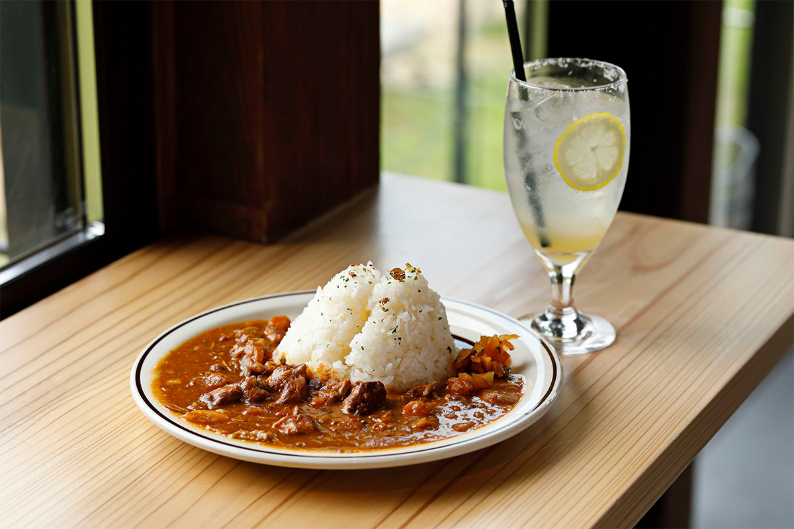
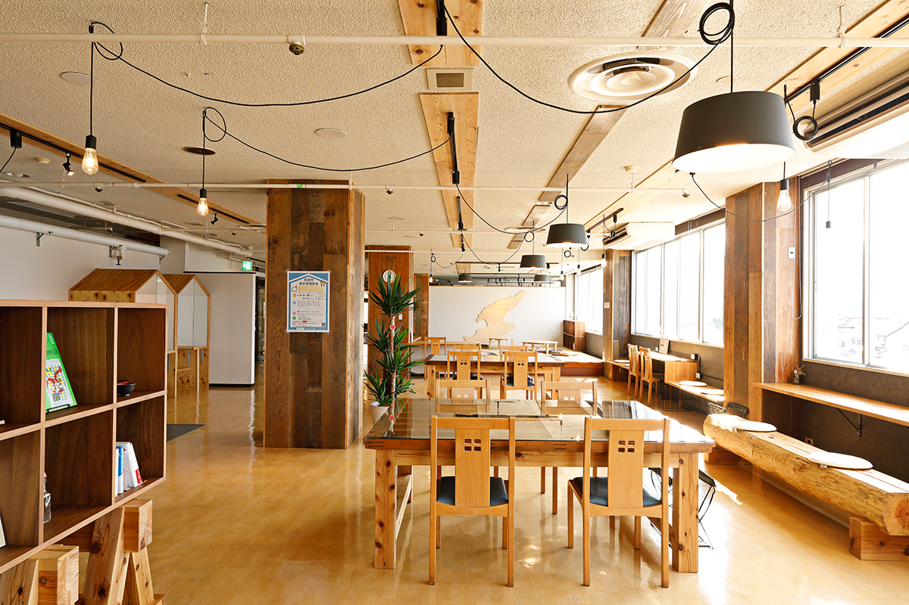

Префектура Ниигата · Итоигава и Садо · природа и знания
Итоигава и Садо: геопарк, школьная сакэварня и долгие дни у Японского моря

Ниигату знают по рису, сакэ и Японскому морю, но её можно объехать и ради знаний. Поездка начинается с геопарка Итоигавы, где рассказывают о трещине в земной коре, с которой началась Япония, а заканчивается на острове Садо, куда хочется приезжать надолго.
Регион
Ниигата, которую стоит изучать
Префектура Ниигата славится рисом, дарами Японского моря, овощами и фруктами, которые здесь собирают круглый год, а ещё считается одним из главных краёв сакэ в стране. Огромная территория префектуры подарила ей кухню, ремёсла, искусство в деревнях, как на фестивале «Земля искусства» Этиго-Цумари, и памятники истории.
Ниигату и Садо можно узнавать с разных сторон. Эта статья о поездке ради знаний: здесь много мест, которые будят любопытство, и почти все они раскрываются лучше, если не спешить.
Геопарк
Итоигава: место, где родилась Япония
Итоигава на западе префектуры стала первым в Японии всемирным геопарком. Здесь есть что посмотреть и без музеев: берег Оясирадзу-Косирадзу, который издавна называют одним из самых опасных участков пути в стране, и красивый горный пруд Таканами. Но обязательно стоит заехать в парк Мияма, где стоит музей камня «Фосса Магна».
Фосса Магна это разлом в земле, который появился, когда рождались Японские острова. В музее показывают фильм о нём, и после него становится понятно, как образовалась страна. Шесть постоянных залов идут по геологическим эпохам: от того, как Земля создавала природу, до богатств, которые она оставила людям.

Главный камень Итоигавы это жадеит, и его истории в музее отведено много места. Рядом лежат редкие минералы из Японии и других стран и метеориты.
Музей «Фосса Магна»
- Адрес
- префектура Ниигата, Итоигава, Итиномия, 1313
- Телефон
- +81 25-553-1880
- Часы работы
- 9:00–17:00 (вход до 16:30)
- Выходные
- понедельник; с декабря по февраль также день после праздника
- Цены / Вход
- взрослые 500 иен
Сакэ
Gakkogura: сакэварня в бывшей школе
Тем, кто хочет почувствовать, как культура рождается из местной природы, рекомендуем записаться на варку сакэ в Gakkogura. Это вторая площадка сакэварни Obata Shuzo, которая делает известное на Садо сакэ MANOTSURU. Под цеха отдали здание закрытой начальной школы Нисимикава, откуда, как говорят, виден самый красивый закат в Японии.
Сакэ здесь варят летом из риса, выращенного на острове, а электричество берут от солнечных панелей. Сакэварня старается, чтобы по кругу шли и ресурсы, и люди: это и привлекает сюда гостей из Японии и других стран, которые возвращаются снова.

Сакэ «Рю-но мэгуми», «Дар дракона», варят из одного сорта коси-хикари с террасных полей Сёрю. Рис шлифуют до 50%, крепость 15,5 градуса. В 2022 году бутылка 720 мл в коробке стоила 3300 иен.

Gakkogura Cafe (Obata Shuzo)
- Адрес
- префектура Ниигата, Садо, Нисимикава, 1871
- Телефон
- +81 90-4327-3614
- Часы работы
- 11:00–16:00
- Выходные
- со среды по субботу (уточняйте заранее)
- Сайт
- obata-shuzo.com
Сакэ MANOTSURU «Рю-но мэгуми»
- Цены / Вход
- 3300 иен за 720 мл (в коробке)
- Телефон
- +81 259-55-3171 (Obata Shuzo)
- Сайт
- obata-shuzo.com
Наследие
Китадзава: фабрика, которую звали первой на Востоке
Когда-то флотационную фабрику Китадзава в Аикаве называли крупнейшей на Востоке. На ней обогащали руду с золотых и серебряных рудников Садо. К руинам можно подойти совсем близко, а в некоторые сезоны их подсвечивают и показывают на них видеопроекции.

Прямо перед фабрикой открылось кафе Kitazawa Terrace. Глядя на руины, которые сформировали культуру золотых и серебряных рудников Садо, можно пообедать блюдами из местных продуктов от шефа, который учился французской кухне. Среди блюд есть «Киндзан карэ», карри золотого рудника: в 2022 году оно стоило 900 иен. Кафе стало новым местом, где история встречается с современной жизнью.

Kitazawa Terrace
- Адрес
- префектура Ниигата, Садо, Аикава-Китадзавамати, 2
- Телефон
- +81 259-58-7085
- Часы работы
- 11:30–15:00 (последний заказ 14:30), 18:00–21:00 (последний заказ 20:30)
- Выходные
- вторник и среда
Работа
SADO PORT LOUNGE: офис с видом на море
В июне 2022 года в порту Рёцу открылся SADO PORT LOUNGE. Прямо перед ним Японское море, а интерьер собран из старого дерева с Садо. Внутри есть общий офис и коворкинг на 50 мест, так что отсюда удобно работать на выезде и жить на острове подолгу.

В 2022 году разовое посещение стоило 330 иен за 30 минут или 3300 иен за день, месячный абонемент 11 000 иен для частных лиц и 33 000 иен для компаний (до пяти человек).
SADO PORT LOUNGE
- Адрес
- префектура Ниигата, Садо, Рёцу-Минато, 353-1
- Телефон
- +81 90-9368-0477
- Часы работы
- 8:30–19:00
- Выходные
- без выходных
- Цены / Вход
- разовое посещение 330 иен за 30 минут, 3300 иен за день; в месяц 11 000 иен для частных лиц, 33 000 иен для компаний (до пяти человек)
Маршрут
Пять дней от Итоигавы до Садо
Такие поездки, как и путешествия по земле и воде Ниигаты, раскрываются только тогда, когда остаёшься надолго. Вот маршрут, в который вошли места из этой статьи.
День 1. Начните с видов на берег Оясирадзу-Косирадзу, в 10 минутах на машине загляните в центр «Оясирадзу корю сэнта Марутанбо», ещё через 20 минут в музей «Фосса Магна». Через 35 минут вас ждёт пруд Таканами, а ночь лучше провести в онсэне Масэгути.
День 2. Неспешная прогулка к «вечному снегу» Масэгути, снежнику, который лежит у горы весь год.
День 3. Покупки в придорожной станции Marine Dream Nou, затем 40 минут до порта Наоэцу и 75 минут на скоростном судне до порта Оги на Садо. В 15 минутах от порта деревня Сюкунэги, а ночёвка в Tabino Hotel Sado.
День 4. Пешие походы с базой в лодже «Донден коген роддзи сидзэн ризото» на плато Донден, а ужин в 50 минутах езды, в ресторане La Barque de Dionysos.
День 5. Лёгкий обед в Gakkogura Cafe, затем видеозал «Кирариум Садо» и исторический золотой рудник Садо, обед в Kitazawa Terrace и под вечер работа в SADO PORT LOUNGE.
Места маршрута
- Адрес
- берег Оясирадзу-Косирадзу: префектура Ниигата, Итоигава, Итибури; «Оясирадзу корю сэнта Марутанбо»: Итоигава, Тонами, 106 (+81 25-562-3002); Tabino Hotel Sado: Садо, Тигуса, 113-12 (+81 259-58-8020); «Донден коген роддзи сидзэн ризото»: Садо, Цубаки, 697 (+81 259-23-2161); La Barque de Dionysos: Садо, Мано-Симмати, 327-1 (+81 259-67-7833)
- Как добраться
- от порта Наоэцу до порта Оги скоростное судно, 75 минут
Фото: Норихито Судзуки.